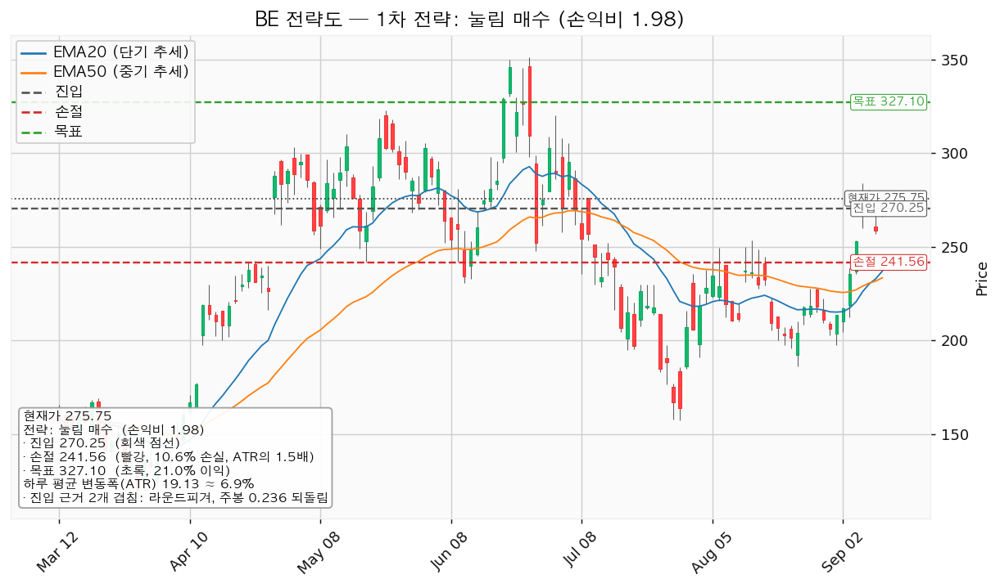
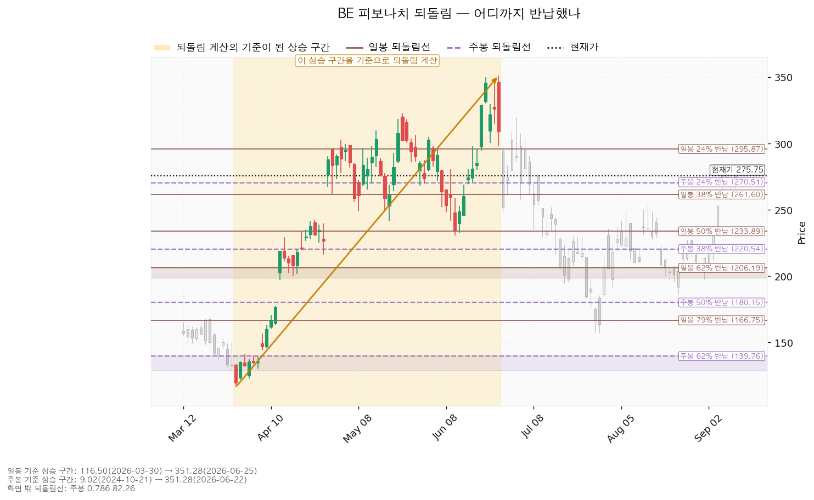
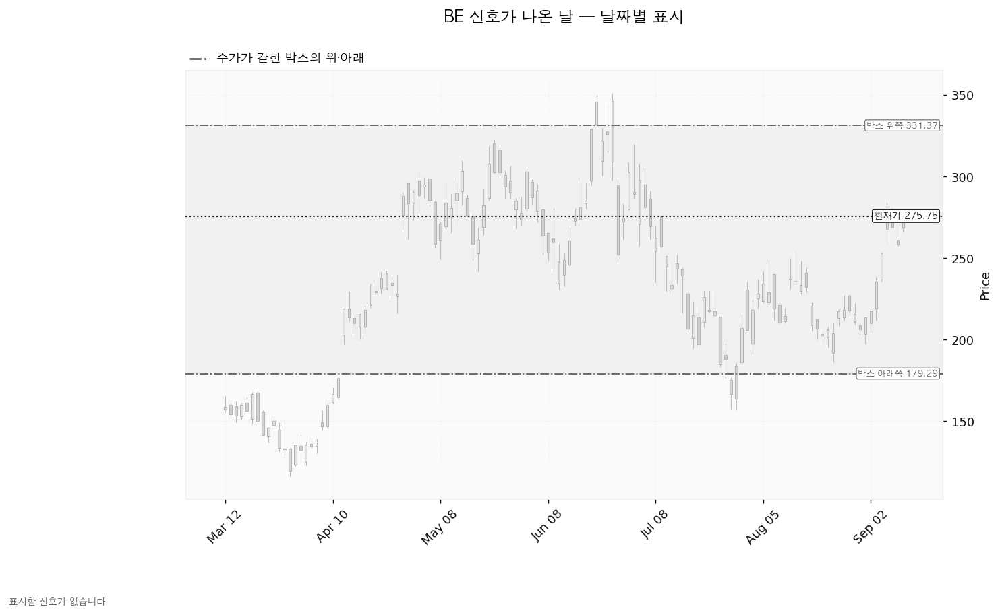
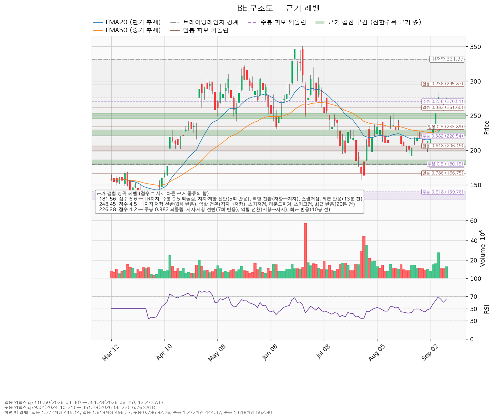

블룸에너지(BE)는 천연가스·수소로 전기를 만드는 고체산화물 연료전지 발전 장비를 제조하는 미국 기업으로, 데이터센터·공장·상업시설에 현장 설치형 전원을 공급합니다.
기준 종가는 2026-09-11의 275.75달러입니다(전일 258.49달러 대비 +6.68%).
| 구분 | 가격 | 판정 방식 | 현재 상태 | 현재가 대비 |
|---|---|---|---|---|
| 회복선 (상승 전환 판정) | 292.94달러 | 일봉 종가로 회복한 뒤 되돌림에서 지지되는지 | 회복 대기 | +6.23% |
| 집행 손절 | 241.56달러 | 종가·장중 구분 없이 닿으면 청산 — 진입한 경우에만 유효하며 미진입 상태에서는 의미가 없습니다 | 미진입 | -12.40% |
| 관망 종료 기준 | 245.60달러 또는 2026-10-28 실적 | 일봉 종가가 아래로 마감하면 이 눌림 매수 계획을 접습니다 | 유지 중 | -10.93% |
| 확인선 (상승 확정) | 327.10달러 | 일봉 종가 돌파 후 되돌림 지지 | 미돌파 | +18.62% |
| 폐기선 (구조) | 179.29달러 | 이탈 후 3거래일 내 종가 회복 실패 + 반등에서 저항 확인 — 하루 변동폭의 5.04배 거리로 실무상 작동하지 않습니다 | 유지 중 | -34.98% |
이 표의 회복선 292.94달러와 대표 셋업의 진입 270.25달러는 다른 가격입니다. 292.94달러는 이 구조가 위로 풀렸는지를 판정하는 선이고, 270.25달러는 그 판정 전에 눌림에서 먼저 잡는 진입가입니다. 두 가격을 섞어 쓰지 마십시오.
집행 손절(241.56)이 관망 종료 기준(245.60)보다 아래에 있는 것은 역할이 다르기 때문입니다. 245.60달러는 8회 반응한 선반과 지지에서 저항으로의 역할 전환이 겹친 구간(245.60~253.31, 4.5점)의 하단이고, 손절은 그 구간 바깥에 두었습니다.
미진입자가 실제로 볼 선은 세 번째 줄입니다. 폐기선까지 -34.98%를 견디며 기다리라는 지침이 아닙니다.
| 항목 | 값 | 의미 |
|---|---|---|
| 현재가(2026-09-11 종가) | 275.75달러 | 전일 258.49달러 대비 +6.68%, 그날 저가 266.12 / 고가 277.28 |
| EMA20 (단기 흐름선) | 236.90달러 | 현재가가 +16.40% 위 — 하루 변동폭의 2.03배 |
| EMA50 (중기 흐름선) | 233.35달러 | 현재가가 +18.17% 위 — 정배열 |
| RSI(14) — 과열·침체 정도를 재는 지표, 50이 중립 | 65.04 | 중립 위, 과열 기준선 70까지 여유 |
| ATR (하루 평균 변동폭) | 19.13달러 | 주가의 6.94% |
| 횡보 박스 | 179.29 ~ 331.37달러 (유효) | 폭이 하루 변동폭의 7.95배, 현재가는 박스의 위쪽 63% 지점 |
| 국면 | 횡보 레인지 — 하단 사수 조건부 | 추세 방향은 상승, 국면 후보는 상승 진행 |
박스 판정 근거: 조회된 일봉은 753봉이며 40·90·180봉 세 구간을 시험했습니다. 가격이 경계 안에 머문 비율은 40봉 0.875, 90봉 0.967, 180봉 0.939로 90봉이 채택됐습니다. 세 구간 모두 유효 판정이지만 가장 잘 지켜진 창이 90봉입니다. 넉 달 반 정도의 횡보를 본 것입니다.
박스 안쪽에서 무슨 일이 있었나 — 매집 우위(사 모으는 쪽이 우세): 지지 테스트는 5회였습니다(2026-07-17 저가 194.60, 거래량 평균의 1.08배 → 07-29 157.33, 2.77배 → 08-03 191.00, 1.05배 → 08-24 185.93, 0.91배 → 09-01 197.50, 0.90배). 테스트 때 매도 거래량은 감소했고, 박스 안 저점은 157.33 → 185.93 → 197.50으로 절상됐습니다. 이 둘이 매집 우위 판정의 근거입니다. 상승봉 대 하락봉 거래량비는 0.93으로 매수 쪽 거래량 우위는 아직 관측되지 않습니다.
직전 구간과의 관계: 이 박스 직전 90봉의 구간은 110.55~195.65달러였고, 가격은 그 위로 뚫고 올라와 지금 박스로 들어왔습니다. 아래에서 올라온 자리라 다시 사 모으는 구간일 수도, 위에서 물량을 넘기는 구간일 수도 있습니다. 지금은 위 문단의 박스 안쪽 관측치가 사 모으는 쪽을 가리킵니다.
현재가가 지지 선반 위가 아니라 박스 중상단에 있어 지지 확인 매수 조건은 채워지지 않았고, 그래서 그 셋업은 산출되지 않았습니다.
| 시나리오 | 조건 | 구조 해석 | 행동 |
|---|---|---|---|
| 상승 전환 | 292.94 종가 회복·지지 → 327.10 종가 돌파 | 속임수 하락 확인 → 강세 신호 → 되돌림 지지 → 상승 국면 | 292.94 회복·지지 확인 후 분할 진입, 327.10 돌파 시 새 셋업으로 다시 산출합니다 |
| 횡보 지속 | 179.29를 지키며 327.10 아래 박스 유지 | 구조는 유지되는 국면입니다. 매물 소화에 시간이 필요할 뿐 부정적 신호가 아닙니다 | 270.25 눌림을 기다리며 추적 항목을 봅니다 — ① 지지 테스트 매도 거래량 감소(현재: 감소) ② 저점 절상(현재: 절상) ③ 상승 시 거래량·캔들 폭 확대(현재: 거래량비 0.93으로 아직 아님) |
| 시나리오 폐기 | 179.29 이탈 후 3거래일 내 회복 실패, 또는 그 전에 160.16 아래 종가 마감 + 반등에서 저항 확인 | 박스 안에서 있었던 일이 매수가 아니라 물량 넘기기였다는 뜻이며, 추가 저점 갱신 가능성을 엽니다 | 포지션 정리 후 새 매도 절정과 새 박스가 만들어질 때까지 관망 |
세 갈래 중 지금 가장 두꺼운 것은 횡보 지속입니다. 박스 안쪽 관측치 셋 중 둘(테스트 거래량 감소, 저점 절상)은 채워졌지만 상승봉 거래량 우위가 아직 없어, 292.94달러를 종가로 넘기 전까지는 박스 안 움직임으로 봅니다.
엔진이 산출한 셋업은 2개입니다. 상승 추세·정배열 국면이라 눌림 매수와 돌파 매수가 함께 나왔고, 현재가가 지지 선반 위가 아니어서 지지 확인 매수는 나오지 않았습니다.
| 항목 | 눌림 매수 — 대표 셋업 | 돌파 매수 |
|---|---|---|
| 엣지의 종류 | 평균회귀 (선취형) | 모멘텀 (돌파 확인형) |
| 전제 | 지지로 눌릴 때 산다 — 되돌림이 멈추는 자리를 노린다 | 저항을 돌파하면 그 방향이 이어진다 |
| 구조 증명도 | 선취형(구조 미확인) (가중치 0.7) — 구조가 증명되기 전에 먼저 잡으므로 진입가는 유리하지만 실패 확률이 높습니다 | 돌파 확인형 (가중치 1.0) — 저항을 종가로 넘긴 뒤 들어가므로 진입가는 불리하지만 구조가 먼저 증명됩니다 |
| 이 유형의 성격 | 승률이 높고 이익 폭이 작은 유형. 저항에서 전량 청산이 정합적입니다 | 자주 틀리고 소수가 크게 맞는 유형 *(이 유형의 일반적 성격이며 이 엔진에서 측정한 값이 아닙니다 — 백테스트 자료가 없습니다)* |
| 진입 | 270.25달러 (-1.99%, 하루 변동폭의 0.29배 아래) | 292.94달러 (+6.23%, 하루 변동폭의 0.90배 위) |
| 진입 근거 겹침 | 2.1점 / 2개 — 라운드피겨 270, 주봉 0.236 되돌림. 구간 270.00~270.51 | 2.1점 / 3개 — 라운드피겨 290, 일봉 0.236 되돌림, 최근 반응(3봉 전). 구간 290.00~295.87 |
| 집행 손절 | 241.56달러 — 진입 기준선에서 하루 변동폭의 1.5배 아래. 손절 폭 -10.62% | 265.22달러 — 근거 겹침 구간(270.00~270.51, 2.1점) 바로 아래. 손절 폭 -9.46%, 하루 변동폭의 1.45배 |
| 목표 | 327.10달러 (진입 대비 +21.04%) — 겹침 2.4점 / 2개(스윙고점, 박스 상단 저항). 구간 322.83~331.37 | 327.10달러 (진입 대비 +11.66%) — 같은 구간 |
| 손익비 | 1 : 1.98 (손절 폭 1.50 ATR 기준) — 손실 폭 28.69달러, 이익 폭 56.85달러 | 1 : 1.23 (손절 폭 1.45 ATR 기준) — 손실 폭 27.72달러, 이익 폭 34.16달러 |
| 비중 | 1회 손실 한도 계좌의 1% ÷ 손절 폭 10.62% = 계좌의 9.4%. 한 종목 상한 13% 이내입니다 | 계좌의 10.6% (참고) |
| 분할 청산(엔진 산출) | T1 292.94에서 50%(손익비 0.79) → 잔여 손절 270.25(본전) → T2 327.10(1.98). 전 구간 1.39, T1 후 하한 0.40 | T1 301.50에서 50%(0.31) → 본전 292.94 → T2 327.10(1.23). 전 구간 0.77, 하한 0.15 |
| 청산 규칙 | 목표 327.10달러에서 전량 청산. 트레일링은 걸지 않습니다 | 같음 |
| 판정 | 채택 — 손익비 1.98 | 대표 아님 — 손익비 1.23으로 1은 넘지만 대표 셋업보다 낮고, 진입이 회복선 위라 같은 목표에 이익 폭이 절반입니다. 엔진은 두 셋업 모두 비매력·보류로 분류하지 않았습니다 |
손익비 1.98은 손절을 조여서 만든 숫자가 아닙니다. 손절 241.56달러는 진입에서 하루 평균 변동폭의 1.50배 아래이고, 정책상의 구조적 손절(아래쪽 근거 겹침 구간이 없을 때 ATR의 1.5배 아래)이 그대로 적용된 값이라 엔진이 별도의 구조적 손절 기준 손익비를 따로 내지 않았습니다. 두 숫자가 벌어지는 문제는 이 셋업에는 없습니다. 손절 241.56달러가 아래쪽에서 가장 두꺼운 근거 구간(245.60~253.31, 겹침 4.5점) 밑에 놓인 것도 유리한 배치입니다.
다만 진입 근거는 얇습니다. 270.25달러의 겹침은 2.1점 / 2개(라운드피겨와 주봉 0.236 되돌림)로, 그 아래 245.60~253.31(4.5점)이나 220.54~229.30(4.2점)보다 근거가 적습니다. 진입가가 현재가에서 하루 변동폭의 0.29배 아래에 불과해, 9월 11일 같은 하루 등락(+6.68%) 안에서 닿았다가 그대로 지나갈 수 있는 거리이기도 합니다. 그래서 270.25달러는 지정가 분할로 잡고, 닿지 않으면 쫓아가지 않습니다.
분할 청산은 이 리포트의 계획이 아닙니다. 엔진 산출치를 위 표에 적어 두었지만, 집행 정책은 목표 327.10달러에서 전량 청산이고 트레일링은 걸지 않습니다. 진입에서 목표까지는 하루 변동폭의 2.97배로 다단 청산을 논할 폭은 되지만(2배라는 기준은 관행이며 정설은 아닙니다), 계획은 하나로 고정합니다.
대표 셋업 선정 이유: 손익비 1.98 × 구조 증명도(선취형) × 근거 겹침 2.1점으로 선정됐습니다. 손익비 순위와 대표 셋업이 일치하지만, 대표가 된 쪽의 구조 증명도는 0.7로 돌파 매수(1.0)보다 낮습니다. 눌림 매수는 구조가 증명되기 전에 먼저 들어가는 거래이고, 그 대가로 진입가가 유리합니다. 돌파 매수는 292.94달러를 종가로 넘긴 사실을 확인하고 들어가지만 목표가 같아 이익 폭이 절반으로 줄어듭니다.
돌파 매수의 집행 규칙: 진입 근거는 모멘텀(저항을 넘으면 이어진다)이지만 집행은 레인지 규칙을 따릅니다 — 손절은 구조 아래, 목표 327.10달러에서 전량 청산이며 트레일링은 걸지 않습니다. 327.10달러 위 구간은 이 포지션을 끌고 가서 먹는 것이 아니라 새 셋업으로 다시 잡습니다.
현재가 추격 여부: 이 종목은 추격 비권장에 해당하지 않습니다. 대표 셋업의 진입가가 현재가보다 아래에 있어 따라 사는 구조가 아니기 때문입니다.

확인선 327.10달러와 대표 셋업의 목표 327.10달러는 같은 가격입니다. 모순이 아니라 분기입니다 — 그 자리에서 막히고 되밀리면 계획대로 전량 청산하고(그게 목표였습니다), 일봉 종가로 넘어서면 상승 확정이며 그때는 새 셋업으로 다시 잡습니다. 박스 상단 331.37달러는 그 위의 맥락으로만 적습니다.
대표 셋업(눌림 매수, 진입 270.25)의 무효화는 세 단계입니다.
| 단계 | 트리거 | 의미 | 행동 |
|---|---|---|---|
| ① 관찰 | 일봉 종가가 270.25 아래로 마감 | 구조 이탈 시작 — 되돌아 올라오면 속임수 하락일 수 있어 아직 무효가 아닙니다 | 신규 진입만 중단합니다. 집행 손절은 그대로 둡니다 |
| ② 경고 | 이탈 후 3거래일 안에 270.25를 종가로 회복하지 못함, 또는 그 전에 일봉 종가가 251.12 아래로 마감(하루 평균 변동폭의 1배만큼 더 밀림) — 둘 중 먼저 오는 쪽 | 되돌림 지지 상실 가능성이 우세해집니다 | 잔여 비중 축소. 반등이 나오면 이 가격에서의 반응을 확인합니다 |
| ③ 무효 | 반등이 270.25에서 막히고 그 아래로 되밀림(지지가 저항으로 전환) | 셋업 폐기 — 구조 해석이 틀린 것으로 확정 | 포지션 정리 후 새 구조가 만들어질 때까지 관망 |
집행 손절 241.56달러는 이 판정과 무관하게 별도로 작동합니다. 장중에 잠깐 270.25달러를 내준 것은 어느 단계에도 해당하지 않습니다.
일봉·주봉 되돌림 모두 계산됐습니다.
| 기준 | 상승 구간 | 주요 되돌림선 | 현재가 위치 |
|---|---|---|---|
| 일봉 | 116.50(2026-03-30) → 351.28(2026-06-25), 하루 변동폭의 12.27배 | 24% 295.87 / 38% 261.60 / 50% 233.89 / 62% 206.19 / 79% 166.75 | 24%(295.87)와 38%(261.60) 사이 |
| 주봉 | 9.02(2024-10-21) → 351.28(2026-06-22), 6.76배 | 24% 270.51 / 38% 220.54 / 50% 180.15 / 62% 139.76 / 79% 82.26 | 24%(270.51) 바로 위 |
7월 29일 저가 157.33달러는 일봉 79% 되돌림선(166.75) 아래까지 내려간 자리였고, 그 뒤 되돌려 올라와 지금은 일봉 기준 24~38% 구간에 있습니다. 상승분의 4분의 3 이상을 되찾은 상태입니다.
대표 셋업의 진입 270.25달러는 주봉 24% 되돌림선(270.51)과 라운드피겨 270이 겹친 자리이고, 회복선 292.94달러는 일봉 24% 되돌림선(295.87)과 라운드피겨 290이 겹친 자리입니다. 두 진입 후보 모두 되돌림선에서 왔습니다.

이 구간에서 엔진이 표시할 신호일은 없습니다. 속임수 하락·강세 신호·약세 신호 어느 것도 조건을 채우지 못했습니다. 신호가 없다는 것이 구조가 깨졌다는 뜻은 아니며, 국면 후보는 상승 진행이고 박스 안쪽 판정은 매집 우위입니다. 다만 이 판정의 근거는 신호일이 아니라 지지 테스트 거래량과 저점 흐름입니다.
아래 차트가 회색으로만 보이는 것은 그 때문입니다.

| 가격대 | 겹침 점수 | 근거 | 현재가 대비 |
|---|---|---|---|
| 179.29 ~ 185.93 | 6.6 | 박스 하단, 주봉 50% 되돌림, 선반(5회 반응), 역할 전환(저항→지지), 스윙저점, 최근 반응(13봉 전) | -34.98% ~ -32.57% |
| 245.60 ~ 253.31 | 4.5 | 선반(8회 반응), 역할 전환(지지→저항), 스윙저점, 라운드피겨 250, 스윙고점, 최근 반응(20봉 전) | -10.93% ~ -8.14% |
| 220.54 ~ 229.30 | 4.2 | 주봉 38% 되돌림, 선반(7회 반응), 역할 전환(저항→지지), 최근 반응(10봉 전) | -20.02% ~ -16.85% |
| 230.61 ~ 236.90 | 3.7 | 스윙저점, EMA50, 일봉 50% 되돌림, EMA20, 최근 반응(10봉 전) | -16.37% ~ -14.09% |
| 270.00 ~ 270.51 | 2.1 | 라운드피겨 270, 주봉 24% 되돌림 — 대표 셋업 진입 | -2.09% ~ -1.90% |
| 290.00 ~ 295.87 | 2.1 | 라운드피겨 290, 일봉 24% 되돌림, 최근 반응(3봉 전) — 회복선 | +5.17% ~ +7.30% |
| 322.83 ~ 331.37 | 2.4 | 스윙고점, 박스 상단 저항 — 확인선·목표 | +17.07% ~ +20.17% |
현재가 아래에서 가장 두꺼운 자리는 245.60~253.31 구간(4.5점)입니다. 8회 반응한 선반이면서 지지에서 저항으로 역할이 바뀐 자리였고, 20봉 전에 실제로 반응이 있었습니다. 관망 종료 기준을 이 구간의 하단 245.60달러로 잡은 이유입니다.
진입 후보 270.00~270.51과 회복선 290.00~295.87은 둘 다 2.1점으로 얇습니다. 현재가 주변 30달러 폭에 두꺼운 근거가 없기 때문이며, 이 구간에서 가격이 빠르게 움직일 수 있다는 뜻입니다.

후행 주가수익비율(PER)은 358.12배, 선행 PER은 56.05배입니다. 후행 주당순이익 0.77달러에 대해 올해 예상치는 2.71달러(+256.1%), 내년 예상치는 4.92달러(+81.8%)입니다. 두 배수가 6배 넘게 벌어진 것은 이익이 급증하는 구간이기 때문입니다. 후행 배수만으로는 비싸다·싸다를 판정할 수 없습니다. 올해 예상치 기준으로 보면 현재가는 101.9배입니다.
애널리스트 26명, 투자의견 매수. 목표주가 평균 276.05달러, 최저 97.00달러, 최고 390.00달러입니다. 현재가 275.75달러는 평균과 +0.11% 차이로 거의 같은 자리에 있습니다. 최저 목표보다는 위에 있습니다.
분포가 97달러에서 390달러까지 네 배로 벌어져 있어, 평균값은 서로 다른 전망의 중간점입니다. 최고 목표까지는 +41.43%, 최저 목표까지는 -64.82%입니다.
6월 25일 고점 351.28달러에서 현재가는 -21.50%입니다. 같은 90일 동안 컨센서스 주당순이익 추정치는 올해분 2.13 → 2.71달러(+27.3%), 내년분 4.35 → 4.92달러(+13.1%)로 상향됐습니다.
추정치가 오르는 동안 가격이 내렸으므로 이 하락은 배수 수축입니다. 사업이 나빠진 신호로 읽을 근거는 이 데이터에 없습니다. 최근 30일 구간에서도 올해분은 2.72 → 2.71달러로 거의 제자리, 내년분은 4.90 → 4.92달러로 소폭 상향입니다.
2025-12-31 결산 기준으로 영업활동 현금흐름 +1억 1,395만 달러, 잉여현금흐름 +5,719만 달러, 설비투자 5,676만 달러(전년 대비 -3.6%)입니다. 영업에서 1억 1,395만이 들어와 설비투자 5,676만을 쓰고 5,719만이 남는 구조로, 세 수치가 서로 맞아떨어집니다.
현금흐름 적자가 아니므로 적자의 성격을 가를 항목이 없습니다. 설비투자가 전년보다 줄어든 상태에서 잉여현금흐름이 흑자인 점은, 위 (a)의 이익 급증 전망이 이미 설비 확대를 크게 앞세우지 않고 나온 것이라는 뜻입니다. 다음 실적에서 설비투자가 다시 늘어나는지는 확인 항목으로 겁니다.
| 목표 | 내년 예상 주당순이익 기준 내재 배수 | 현재 선행 배수(56.05배) 대비 |
|---|---|---|
| 평균 276.05달러 | 56.11배 | 거의 동일 — 배수 확장 없음 |
| 최고 390.00달러 | 79.27배 | 배수가 +41% 확장돼야 나오는 값 |
| 최저 97.00달러 | 19.71배 | 배수가 -65% 수축하는 경우 |
컨센서스 평균 목표 276.05달러는 배수를 지금 수준에 그대로 두고 내년 이익이 4.92달러까지 오르는 것만 반영한 값입니다. 이익 증가가 그대로 실현돼도 평균 목표 기준의 12개월 상방은 현재가와 같습니다. 최고 목표 390달러는 이익 증가에 더해 배수 확장까지 필요한 값입니다.
추정치 상향(90일 +27.3% / +13.1%), EMA 정배열, 박스 안 저점 절상, 지지 테스트 거래량 감소가 모두 갖춰져 구조 쪽 근거는 살아 있습니다. 동시에 현재가가 26명의 목표주가 평균과 같은 자리에 있어 12개월 시계의 컨센서스 상방은 평균 기준으로 없습니다.
두 결론이 갈리는 것은 시계가 다르기 때문입니다. 이 리포트의 셋업은 수 주 시계이며 박스 상단 327.10달러까지 +18.62% 여지를 봅니다. 컨센서스는 12개월 시계입니다. 같은 층위가 아니므로 모순이 아니며, 이 리포트의 답은 진입 270.25 / 손절 241.56 / 목표 327.10입니다.
| 날짜 | 이벤트 | 볼 수치 |
|---|---|---|
| 2026-10-28 | 분기 실적 발표 | 올해 주당순이익 컨센서스 2.71달러(범위 2.42~3.08)를 향한 경로, 영업활동 현금흐름의 부호, 설비투자 증감, 내년 가이던스 |
가격 트리거와 별개로 이 날짜가 이 계획의 시한입니다. 270.25달러 진입이 그 전에 체결되지 않으면, 실적 결과를 보고 계획을 다시 짭니다.
구조 폐기선 179.29달러는 현재가에서 하루 평균 변동폭의 5.04배(-34.98%) 아래입니다. 3배를 넘으므로 실무상 무효화 기준으로 작동하지 않습니다. 가격이 아닌 조건을 따로 겁니다.
10월 28일 실적에서 다음 중 하나가 확인되면 가격과 무관하게 이 판단을 접습니다.
가격 쪽에서 실제로 보는 선은 관망 종료 기준 245.60달러 일봉 종가 이탈입니다.
1회 매매에서 계좌의 1%를 잃는 것을 한도로 하고, 손절 폭 -10.62%가 포지션 크기를 정합니다. 계좌의 9.4%이며 한 종목 상한 13% 이내입니다.
판정은 270.25달러 눌림 대기입니다. 손익비 1.98로 걸 수 있는 계획이고, 진입가가 현재가 아래라 지금 따라 살 자리는 아닙니다. 270.25달러에 지정가로 걸고, 닿지 않은 채 292.94달러를 종가로 넘어가면 그때는 이 셋업을 폐기하고 새로 산출합니다.
하루 평균 변동폭이 주가의 6.94%로 8% 기준 아래이고, 손절 폭은 그 1.50배인 -10.62%입니다. 논지와 무관한 하루치 등락으로 손절이 체결될 위험은 이 셋업에서는 크지 않습니다.
수 주 시계에 맞는 도구이며, 12개월 컨센서스와는 층위가 다릅니다.
*이 리포트는 정보 제공 목적이며 투자 권유가 아닙니다. 투자 판단과 그 결과는 투자자 본인에게 귀속됩니다.*